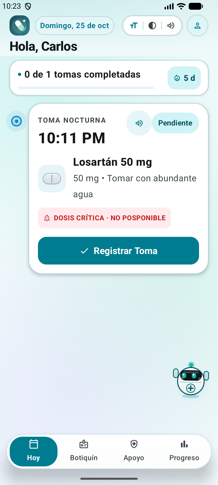
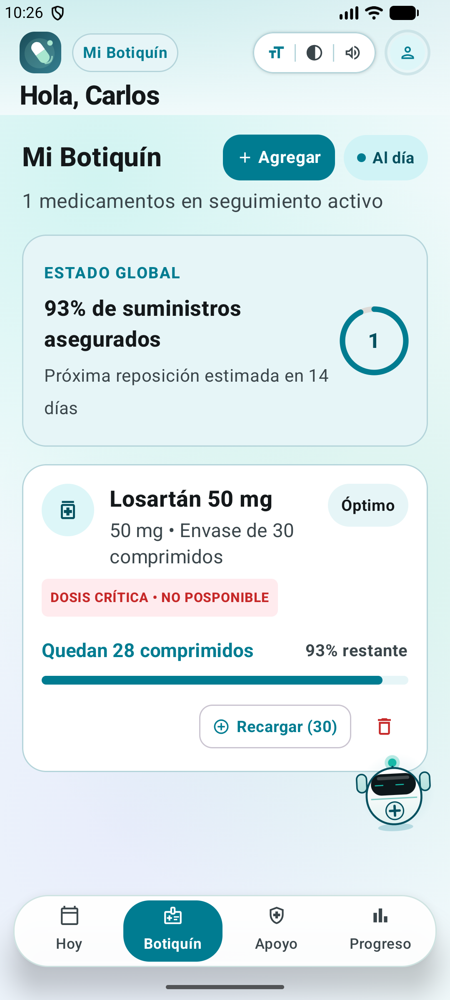
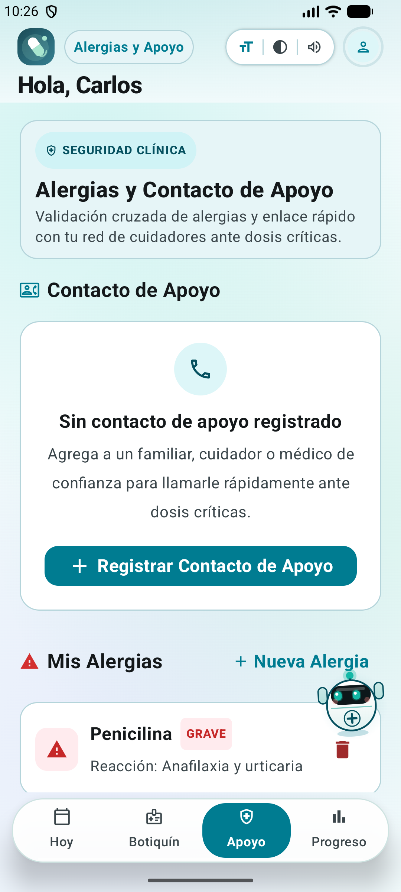
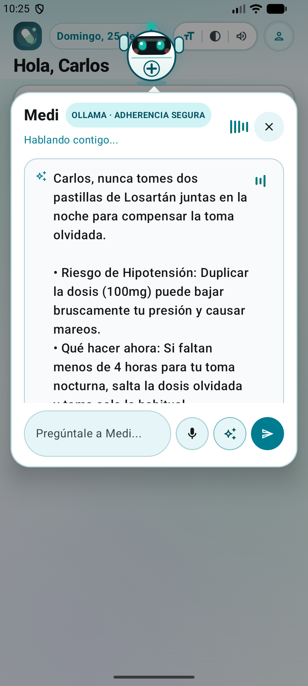

TÉCNICO SUPERIOR UNIVERSITARIO EN DESARROLLO DE SOFTWARE MULTIPLATAFORMA
MedReminder AI: Sistema Inteligente de Gestión y Supervisión Farmacológica
Docente: Ing. Hector Velazquez Estrada
Grupo: DSM - 53 | Equipo: 5 (MedReminder AI)
Presentan:
222410897 – Gutierrez Ugalde Samuel
222410935 – Nava Garcia Rodrigo
222411182 – Castillo Ramirez Nahum Yabet
222410915 – Ramirez Romero Pablo
222410899 – Peña Hernandez Alexander
Nombre Oficial: MedReminder AI: Sistema Inteligente de Gestión, Supervisión Clínica y Recordatorio Farmacológico
MedReminder AI es una plataforma tecnológica integral de salud digital diseñada para resolver uno de los problemas más críticos en la medicina preventiva y ambulatoria: la falta de adherencia al tratamiento farmacológico y el riesgo de complicaciones por errores de dosificación o polifarmacia.
La solución combina una aplicación móvil nativa para el sistema operativo Android (construida con lenguaje Kotlin y el kit declarativo Jetpack Compose bajo el patrón arquitectónico MVVM), un ecosistema de backend en microservicios construido sobre FastAPI en Python, y un esquema de persistencia políglota híbrido que une la rigidez transaccional de MySQL 8.4 (para cuentas, prescripciones, posología y catálogo de medicamentos) con la velocidad y flexibilidad documental de MongoDB 7.0 (para telemetría clínica inmutable, auditoría de tomas y registro de eventos).
Adicionalmente, el proyecto incorpora inteligencia artificial clínica local mediante Ollama (modelo especializado «medi-clinico»), permitiendo el escaneo automatizado de recetas médicas vía visión por computadora multimodal y asistencia conversacional médica contextualizada, garantizando en todo momento la privacidad de los datos de salud sin exponer información confidencial a servicios de terceros en la nube.
En la actualidad, según datos oficiales de la Organización Mundial de la Salud (OMS), más del 50% de los pacientes con enfermedades crónico-degenerativas (como hipertensión arterial, diabetes mellitus, insuficiencia renal o cardiopatías) no siguen adecuadamente las instrucciones de sus tratamientos médicos. En países como México, esta situación se agrava de manera exponencial en la población de adultos mayores (personas de 60 años o más), quienes padecen con frecuencia el fenómeno clínico conocido como polifarmacia, consistente en el consumo diario de cuatro o más fármacos simultáneos con horarios, dosis y contraindicaciones cruzadas.
Las principales deficiencias identificadas en el entorno actual son: 1. Olvidos recurrentes y confusión de horarios: La memoria a corto plazo suele deteriorarse en la vejez, lo que provoca omisiones involuntarias de tomas vitales o, lo que es peor, duplicidades accidentales que desencadenan intoxicaciones graves. 2. Brecha digital y diseño inaccesible: La mayoría de las aplicaciones móviles en el mercado presentan interfaces saturadas de opciones confusas, tipografías minúsculas, contrastes pobres y flujos complejos que alienan y frustran al adulto mayor. 3. Falta de integración del cuidador familiar: Las alarmas genéricas de los teléfonos celulares se quedan sonando de manera aislada; si el paciente no puede responder, ningún familiar o cuidador primario se entera a tiempo de que un fármaco de rescate o crítico fue ignorado. 4. Inexistencia de auditoría y reportes clínicos confiables: Cuando el paciente asiste a su consulta de control, el médico no cuenta con un registro real y veraz de si se tomó el medicamento a la hora exacta, basándose únicamente en testimonios verbales imprecisos.
MedReminder AI nace para erradicar estas problemáticas a través de alarmas nativas deterministas, diseño ergonómico de alta accesibilidad, supervisión reactiva para cuidadores y persistencia clínica auditada.
Para garantizar la integridad transaccional (propiedades ACID: Atomicidad, Consistencia, Aislamiento y Durabilidad) en los datos esenciales del sistema, se diseñó un modelo entidad-relación normalizado en Tercera Forma Normal (3NF). Este esquema asegura que los datos de los usuarios, sus medicamentos prescritos, esquemas de tratamiento y contactos de soporte no presenten redundancias anómalas ni inconsistencias ante operaciones concurrentes.
El esquema está compuesto por 8 tablas relacionales interconectadas mediante llaves foráneas con políticas de integridad referencial estrictas (`ON DELETE CASCADE`), garantizando que la eliminación o modificación de un registro padre limpie de manera coherente sus entidades dependientes (por ejemplo, si se desactiva o borra un medicamento, se cancelan coherentemente sus tratamientos y recordatorios asociados).
| Entidades Vinculadas | Cardinalidad | Descripción del Vínculo | Regla Cascada |
|---|---|---|---|
| usuario ── medicamento | 1 : N (Uno a Muchos) | Un usuario puede tener registrados múltiples medicamentos en su botiquín personal. Cada medicamento pertenece obligatoriamente a un usuario. | ON DELETE CASCADE |
| usuario ── alergia_usuario | 1 : N (Uno a Muchos) | Un paciente puede registrar múltiples alergias farmacológicas para prevenir interacciones graves. Cada alergia está ligada al usuario. | ON DELETE CASCADE |
| usuario ── contacto_apoyo | 1 : N (Uno a Muchos) | Un usuario puede vincular uno o varios familiares o cuidadores que recibirán alertas. Cada contacto pertenece a un paciente. | ON DELETE CASCADE |
| medicamento ── tratamiento | 1 : N (Uno a Muchos) | Un medicamento puede tener distintos esquemas terapéuticos a lo largo del tiempo (dosis, frecuencia y duración). | ON DELETE CASCADE |
| tratamiento ── recordatorio | 1 : N (Uno a Muchos) | Un tratamiento genera múltiples recordatorios planificados en fechas y horas específicas en el calendario del paciente. | ON DELETE CASCADE |
| recordatorio ── historial_toma | 1 : N (Uno a Muchos) | Un recordatorio puede registrar múltiples eventos de auditoría (por ejemplo, si fue pospuesto dos veces y luego tomado). | ON DELETE CASCADE |
| usuario ── alerta_cuidador | 1 : N (Uno a Muchos) | Un usuario genera alertas clínicas de advertencia o peligro dirigidas a su red de apoyo cuando se pospone u omite un fármaco. | ON DELETE CASCADE |
+-----------------------+
| usuario |
+-----------------------+
| PK id_usuario |<-------+
| nombre_completo | |
| correo (UQ) | |
| password_hash | |
| fecha_nacimiento | |
| rol | |
+-----------------------+ |
| 1 1 | |
| N N | |
+-------------------+ +--------------------+ +---------------------+
| contacto_apoyo | | alergia_usuario | | alerta_cuidador |
+-------------------+ +--------------------+ +---------------------+
| PK id_contacto | | PK id_alergia | | PK id_alerta |
| FK id_usuario | | FK id_usuario | | FK id_usuario |
| nombre_completo| | sustancia | | tipo_alerta |
| telefono | | severidad | | mensaje |
+-------------------+ +--------------------+ +---------------------+
|
| (usuario 1:N medicamento)
v
+-----------------------+
| medicamento |
+-----------------------+
| PK id_medicamento |<-------------------+
| FK id_usuario | |
| nombre | |
| dosis | |
| cantidad_stock | |
| es_critico | |
+-----------------------+ |
| 1 |
| N |
v |
+-----------------------+ |
| tratamiento | |
+-----------------------+ |
| PK id_tratamiento | |
| FK id_medicamento | |
| frecuencia_horas | |
| fecha_inicio | |
+-----------------------+ |
| 1 |
| N |
v |
+-----------------------+ |
| recordatorio | |
+-----------------------+ |
| PK id_recordatorio |<----+ |
| FK id_tratamiento | | |
| hora_programada | | |
| estado | | |
+-----------------------+ | |
| 1 | |
| N | |
v | |
+-----------------------+ | |
| historial_toma | | |
+-----------------------+ | |
| PK id_historial | | |
| FK id_recordatorio |-----+ |
| fecha_accion | |
| estado_final | |
+-----------------------+ +
Especificaciones técnicas detalladas de las 8 tablas de la base de datos relacional MySQL 8.4:
| Campo | Tipo | Longitud | Clave | Nulo | Default | Descripción |
|---|---|---|---|---|---|---|
| id_usuario | INT | Auto-increment | PK | No | Autonumérico | Identificador único y secuencial asignado a cada paciente o usuario registrado. |
| nombre_completo | VARCHAR | 255 | Ninguna | No | N/A | Nombre y apellidos completos del paciente para personalización de interfaz y reportes. |
| correo | VARCHAR | 255 | Ninguna (UNIQUE) | No | N/A | Correo electrónico único utilizado como identificador de autenticación y acceso. |
| password_hash | VARCHAR | 255 | Ninguna | No | N/A | Huella criptográfica de la contraseña procesada con algoritmo seguro de hashing. |
| fecha_nacimiento | DATE | YYYY-MM-DD | Ninguna | Sí | NULL | Fecha de nacimiento del paciente; permite calcular la edad para habilitar modo adulto mayor. |
| rol | VARCHAR | 30 | Ninguna | No | 'paciente' | Rol dentro de la plataforma ('paciente', 'cuidador', 'medico', 'administrador'). |
| fecha_registro | TIMESTAMP | Fecha y Hora | Ninguna | No | CURRENT_TIMESTAMP | Marca temporal inmutable del momento exacto del alta en el sistema. |
| Campo | Tipo | Longitud | Clave | Nulo | Default | Descripción |
|---|---|---|---|---|---|---|
| id_medicamento | INT | Auto-increment | PK | No | Autonumérico | Identificador unívoco del fármaco registrado en el inventario del paciente. |
| id_usuario | INT | Relación | FK | No | N/A | Llave foránea que referencia al paciente dueño del fármaco (`usuario.id_usuario`). |
| nombre | VARCHAR | 255 | Ninguna | No | N/A | Nombre comercial o genérico del medicamento (ej. 'Losartán', 'Metformina'). |
| principio_activo | VARCHAR | 255 | Ninguna | Sí | NULL | Sustancia activa del compuesto químico para validación de alergias y contraindicaciones. |
| dosis | VARCHAR | 100 | Ninguna | No | N/A | Cantidad de sustancia por ingesta (ej. '50 mg', '1 cápsula', '10 ml'). |
| cantidad_stock | INT | Numérico >= 0 | Ninguna | No | 0 | Cantidad física actual de pastillas o unidades disponibles en el botiquín del paciente. |
| stock_inicial | INT | Numérico >= 0 | Ninguna | No | 30 | Unidades con las que inició la caja o envase; se usa para calcular porcentaje restante. |
| forma_farmaceutica | VARCHAR | 40 | Ninguna | No | 'comprimidos' | Presentación del medicamento: comprimidos, jarabe, inyección, gotas, etc. |
| color_pastilla | VARCHAR | 40 | Ninguna | No | 'blanco' | Color visual de la gragea o cápsula para facilitar reconocimiento gráfico al adulto mayor. |
| instrucciones_toma | VARCHAR | 255 | Ninguna | Sí | NULL | Instrucciones clínicas adicionales (ej. 'Tomar con abundante agua después de cenar'). |
| proposito | VARCHAR | 120 | Ninguna | Sí | NULL | Finalidad terapéutica del fármaco (ej. 'Control de Presión Arterial', 'Glucosa'). |
| permite_posponer | BOOLEAN | 0 ó 1 | Ninguna | No | TRUE | Indica si la app permite al paciente posponer la toma 10 minutos o si debe ser estricta. |
| es_critico | BOOLEAN | 0 ó 1 | Ninguna | No | FALSE | Bandera de alta prioridad: si es TRUE, su omisión dispara alerta inmediata al cuidador. |
| contraindicaciones | TEXT | Texto libre | Ninguna | Sí | NULL | Advertencias médicas relevantes, interacciones y precauciones particulares. |
| Campo | Tipo | Longitud | Clave | Nulo | Default | Descripción |
|---|---|---|---|---|---|---|
| id_alergia | INT | Auto-increment | PK | No | Autonumérico | Identificador único del registro de alergia farmacológica. |
| id_usuario | INT | Relación | FK | No | N/A | Referencia al paciente que presenta la reacción alérgica (`usuario.id_usuario`). |
| sustancia | VARCHAR | 255 | Ninguna | No | N/A | Nombre del compuesto o principio activo alérgeno (ej. 'Penicilina', 'Sulfas'). |
| severidad | ENUM | 'leve', 'moderada', 'grave' | Ninguna | No | 'grave' | Nivel de gravedad de la reacción alérgica. |
| reaccion | VARCHAR | 255 | Ninguna | Sí | NULL | Síntomas manifestados por el paciente (ej. 'Erupción cutánea', 'Anafilaxia'). |
| fecha_registro | TIMESTAMP | Fecha y Hora | Ninguna | No | CURRENT_TIMESTAMP | Fecha y hora en que se ingresó la alerta al perfil médico. |
| Campo | Tipo | Longitud | Clave | Nulo | Default | Descripción |
|---|---|---|---|---|---|---|
| id_contacto | INT | Auto-increment | PK | No | Autonumérico | Identificador único del contacto de soporte o familiar. |
| id_usuario | INT | Relación | FK | No | N/A | Paciente al que asiste y supervisa este contacto (`usuario.id_usuario`). |
| nombre_completo | VARCHAR | 255 | Ninguna | No | N/A | Nombre y apellido del familiar, tutor o enfermero asignado. |
| telefono | VARCHAR | 50 | Formato E.164 | No | N/A | Número telefónico con código de país para envío de SMS, WhatsApp o llamada. |
| parentesco | VARCHAR | 100 | Ninguna | No | N/A | Relación familiar con el paciente (ej. 'Hijo', 'Cónyuge', 'Cuidador'). |
| correo | VARCHAR | 255 | Ninguna | Sí | NULL | Dirección electrónica para copia de reportes y notificaciones push. |
| es_principal | BOOLEAN | 0 ó 1 | Ninguna | No | TRUE | Indica si es el contacto primario que se llamará primero ante emergencias. |
| fecha_registro | TIMESTAMP | Fecha y Hora | Ninguna | No | CURRENT_TIMESTAMP | Momento en que se vinculó a la red de soporte. |
| Campo | Tipo | Longitud | Clave | Nulo | Default | Descripción |
|---|---|---|---|---|---|---|
| id_tratamiento | INT | Auto-increment | PK | No | Autonumérico | Identificador secuencial del ciclo o esquema de tratamiento. |
| id_medicamento | INT | Relación | FK | No | N/A | Medicamento recetado asociado a este tratamiento (`medicamento.id_medicamento`). |
| frecuencia_horas | INT | Horas entre tomas | Ninguna | No | N/A | Periodicidad en horas con la que debe tomarse el fármaco (ej. 8, 12 o 24 hrs). |
| fecha_inicio | TIMESTAMP | Fecha y Hora | Ninguna | No | CURRENT_TIMESTAMP | Día y hora de arranque de la primera dosis del tratamiento. |
| fecha_fin | TIMESTAMP | Fecha y Hora | Ninguna | Sí | NULL | Día y hora de culminación del tratamiento; si es crónico, el campo es NULL. |
| estado | ENUM | 'activo', 'inactivo' | Ninguna | No | 'activo' | Estado operativo del tratamiento en el motor de generación de recordatorios. |
| Campo | Tipo | Longitud | Clave | Nulo | Default | Descripción |
|---|---|---|---|---|---|---|
| id_recordatorio | INT | Auto-increment | PK | No | Autonumérico | Identificador unívoco de la toma teórica programada. |
| id_tratamiento | INT | Relación | FK | No | N/A | Tratamiento médico que dio origen a esta alarma (`tratamiento.id_tratamiento`). |
| hora_programada | TIMESTAMP | Fecha y Hora | Ninguna | No | N/A | Momento exacto en que debe activarse la notificación o alarma sonora. |
| estado | ENUM | 'pendiente', 'tomado', 'pospuesto', 'omitido' | Ninguna | No | 'pendiente' | Estado actual en el que se encuentra la dosis programada. |
| veces_pospuesto | TINYINT | Numérico 0-255 | Ninguna | No | 0 | Contador de ocasiones en que el paciente presionó 'Posponer 10 min'. |
| Campo | Tipo | Longitud | Clave | Nulo | Default | Descripción |
|---|---|---|---|---|---|---|
| id_historial | INT | Auto-increment | PK | No | Autonumérico | Identificador único de la línea de auditoría de acción del paciente. |
| id_recordatorio | INT | Relación | FK | No | N/A | Recordatorio al que hace referencia la interacción (`recordatorio.id_recordatorio`). |
| fecha_accion | TIMESTAMP | Fecha y Hora | Ninguna | No | CURRENT_TIMESTAMP | Momento real en que el usuario tocó el botón en su teléfono celular. |
| estado_final | ENUM | 'tomado', 'pospuesto', 'omitido' | Ninguna | No | N/A | Acción clínica ejecutada por el usuario en esta interacción. |
| notas | TEXT | Texto libre | Ninguna | Sí | NULL | Comentarios u observaciones agregadas por el paciente (ej. 'Me provocó náusea'). |
| Campo | Tipo | Longitud | Clave | Nulo | Default | Descripción |
|---|---|---|---|---|---|---|
| id_alerta | INT | Auto-increment | PK | No | Autonumérico | Identificador único de la notificación de supervisión generada. |
| id_usuario | INT | Relación | FK | No | N/A | Paciente que originó la situación clínica de riesgo (`usuario.id_usuario`). |
| tipo_alerta | VARCHAR | 40 | Ninguna | No | 'advertencia_normal' | Clasificación de severidad: 'emergencia_critica' o 'advertencia_normal'. |
| accion_origen | VARCHAR | 40 | Ninguna | No | 'posponer' | Causa del disparo: 'posponer', 'omitir' o 'vencimiento_tiempo'. |
| nombre_medicamento | VARCHAR | 160 | Ninguna | No | N/A | Fármaco involucrado en la alerta para conocimiento inmediato del familiar. |
| dosis | VARCHAR | 80 | Ninguna | No | '' | Dosificación prescrita del fármaco involucrado. |
| es_critico | BOOLEAN | 0 ó 1 | Ninguna | No | FALSE | Indica si el medicamento es vital para la estabilidad del paciente. |
| mensaje | VARCHAR | 500 | Ninguna | No | N/A | Texto explicativo redactado en lenguaje natural para el cuidador. |
| nombre_cuidador | VARCHAR | 160 | Ninguna | No | 'Cuidador Principal' | Nombre del familiar o enfermero a quien va dirigido el aviso. |
| telefono_cuidador | VARCHAR | 60 | Ninguna | No | '' | Número telefónico al cual se canalizó la alerta automática. |
| atendida | BOOLEAN | 0 ó 1 | Ninguna | No | FALSE | Indica si el cuidador ya revisó y confirmó la atención de la emergencia. |
| fecha_creacion | TIMESTAMP | Fecha y Hora | Ninguna | No | CURRENT_TIMESTAMP | Marca temporal precisa en que el sistema generó el incidente. |
Para que MedReminder AI cumpla satisfactoriamente con sus metas clínicas, preventivas y operativas, el sistema requiere procesar, almacenar y consultar de manera ágil los siguientes tipos de datos esenciales: 1. Información de Identidad y Perfil del Paciente: Nombre completo, correo, fecha de nacimiento (para calcular edad y ajustar los parámetros de tamaño de fuente, contraste y sensibilidad del sistema de alertas para adultos mayores) y credenciales cifradas. 2. Datos Farmacológicos y de Posología: Nombre genérico y comercial del fármaco, principio activo, presentación (tabletas, gotas, jarabe), color de la cápsula para reconocimiento visual, inventario físico de stock y nivel de criticidad. 3. Horarios y Calendario Terapéutico: Frecuencia en horas, hora de primera toma, fecha de inicio y conclusión, permitiendo la generación determinista de la agenda de tomas a futuro. 4. Red de Soporte y Cuidadores: Directorio de contactos de confianza, números telefónicos validados para mensajería y llamadas, parentesco y asignación de cuidadores principales. 5. Trazabilidad de Auditoría y Cumplimiento: Registro de cada clic de toma, posposición y omisión con marca de tiempo precisa y comentarios del usuario, conformando el historial para el médico tratante. 6. Telemetría y Eventos Clínicos Semi-estructurados: Bitácora de incidentes, cambios en el botiquín, fallas de conectividad y alertas emitidas para análisis estadístico y minería de datos.
El sistema implementa una arquitectura de Persistencia Políglota Híbrida distribuida en tres niveles complementarios:
A. Base de Datos Relacional (MySQL 8.4 Server): - Ubicación: Servidor de base de datos en contenedor Docker independiente, conectado a una red privada virtual de backend. - Características: Almacena las entidades fuertemente estructuradas bajo garantías ACID completas. Aquí residen usuarios, medicamentos, tratamientos, recordatorios y contactos. El volumen estimado es moderado (cientos de miles de filas) pero con una criticidad de integridad absoluta: no puede existir un recordatorio huérfano ni un paciente sin id válido.
B. Base de Datos No Relacional (MongoDB 7.0): - Ubicación: Contenedor NoSQL optimizado para operaciones de lectura y escritura intensiva, accesible mediante la base de datos `medreminder_logs`. - Características: Almacena documentos en formato BSON semiestructurado en colecciones como `eventos_clinicos` y `auditoria_accesos`. Permite escrituras asíncronas no bloqueantes con latencia cercana a 0 ms para el hilo HTTP de la aplicación móvil. Posee un esquema dinámico y flexible, ideal para absorber cambios en los formatos de telemetría sin requerir migraciones DDL.
C. Almacenamiento Local en Dispositivo Móvil (Android Room / SQLite & DataStore): - Ubicación: Memoria interna segura (`data/data/com.medreminder.app/`) del teléfono inteligente del usuario. - Características: Garantiza que la aplicación funcione en modo 100% offline. Las alarmas de toma se sincronizan localmente con el `AlarmManager` del sistema operativo Android, sonando con precisión de milisegundos aun cuando el paciente no disponga de conexión Wi-Fi ni datos móviles.
Para reducir al mínimo el error humano y la fatiga operativa, MedReminder AI automatiza cinco procesos clave:
1. Generación Automática de Ventanas de Toma: Mediante el servicio `recordatorio_service.py`, al registrar o renovar un tratamiento, el sistema calcula matemáticamente y genera en bloque las tomas para los siguientes 7 a 14 días según la frecuencia horaria, evitando que el usuario deba programar alarma por alarma manualmente.
2. Detección Proactiva de Omisiones por Tiempo Vencido: Un worker en segundo plano evalúa continuamente los recordatorios en estado 'pendiente'. Si transcurren más de 30 minutos posteriores a la hora programada sin confirmación del usuario, el sistema actualiza automáticamente el estado a 'omitido' y evalúa la criticidad del fármaco.
3. Disparo Reactivo de Alertas Clínicas al Cuidador: Cuando el paciente pospone un medicamento marcado como crítico (`es_critico = TRUE`) o cuando un adulto mayor ignora un fármaco de control regular, un pipeline reactivo genera un registro en `alerta_cuidador` y dispara automáticamente una notificación push de alta prioridad y una alerta dirigida al teléfono del familiar.
4. Control de Inventario y Alerta de Desabasto: Cada confirmación de 'tomado' decrementa automáticamente una unidad en `cantidad_stock`. Cuando las unidades restantes caen por debajo del 20% del stock inicial, el sistema genera automáticamente un aviso de 'Resurtir Medicamento' para prevenir que el paciente se quede sin fármacos esenciales.
5. Respaldos Automatizados de Datos (Cron Jobs): Rutinas automatizadas en el contenedor de infraestructura que ejecutan volcados lógicos diarios de MySQL y MongoDB con rotación de versiones y compresión para evitar sobrellenado de disco.
Métodos de Importación: - Importación Asistida por IA de Recetas Médicas: El paciente o cuidador fotografía la receta médica con la cámara del dispositivo móvil. La imagen es procesada por el microservicio de IA clínica (Ollama con modelo de visión multimodal `medi-clinico`), el cual realiza OCR inteligente, extrae los nombres de fármacos, dosis, frecuencias y duraciones, y los convierte automáticamente en un objeto JSON estructurado que se pre-llena en el formulario de la app para confirmación del usuario con un solo toque. - Inicialización y Sembrado de Esquema (DDL/DML): Carga masiva de catálogos y esquemas a través de scripts SQL (`01_schema.sql`) montados en el punto de entrada `/docker-entrypoint-initdb.d` de MySQL en la primera inicialización.
Métodos de Exportación: - Reporte Clínico en Formato PDF y CSV: La plataforma permite exportar el historial de adherencia de los últimos 30, 60 o 90 días en un documento PDF estructurado y estilizado, listo para ser enviado por correo electrónico o impreso para el médico geriatra. - Exportación de Copias de Respaldo: Scripts de mantenimiento que ejecutan herramientas nativas de volcado lógico: * MySQL: `mysqldump --single-transaction --routines --triggers -u root -p medreminder_db > backup_mysql.sql` * MongoDB: `mongodump --uri="mongodb://..." --db=medreminder_logs --gzip --archive=backup_mongo.gz` - Exportación de Telemetría: Descarga de logs de eventos en formato JSON mediante endpoints administrativos para auditoría externa.
Por tratarse de una plataforma que gestiona datos sensibles de salud personal, MedReminder AI aplica los más estrictos estándares de la industria (alineados a la Norma Oficial Mexicana NOM-024-SSA3-2012 y principios de HIPAA y GDPR):
1. Principio de Menor Privilegio (Least Privilege): Las aplicaciones y microservicios no acceden como usuario 'root' ni 'sa'. Se crean usuarios dedicados para el backend con privilegios exclusivos sobre las bases de datos de la aplicación (`medreminder_db` y `medreminder_logs`), impidiendo comandos destructivos como `DROP DATABASE` o alteración de esquemas en tiempo de ejecución.
2. Cifrado Criptográfico de Contraseñas: Se prohíbe el almacenamiento de contraseñas en texto plano. Se implementa hashing robusto mediante algoritmos con sal única y función de derivación de claves de alto costo computacional (PBKDF2 con SHA-256 o Bcrypt).
3. Cifrado de Canales de Comunicación (TLS/SSL): Todo el tráfico entre la aplicación móvil Android y el servidor backend viaja obligatoriamente encapsulado en túneles HTTPS con TLS 1.3, mitigando ataques de intermediario (Man-in-the-Middle).
4. Aislamiento de Red mediante Contenedores: Los puertos de bases de datos (3306 de MySQL y 27017 de MongoDB) no se exponen al exterior en entornos de producción. La comunicación ocurre estrictamente dentro de la red puente virtual de Docker (`medreminder-net`).
5. Sanitización y Prevención de Inyecciones (SQL & NoSQL): Implementación rigurosa de ORM (SQLAlchemy) con consultas preparadas y tipado fuerte con Pydantic, impidiendo la inyección de sentencias SQL maliciosas o inyecciones de operadores de consulta en MongoDB.
6. Políticas de Respaldos Cifrados y Verificación Periódica: Los archivos de respaldo se generan comprimidos, se cifran con clave simétrica AES-256 y se someten a simulacros de restauración mensual para garantizar el objetivo de tiempo de recuperación (RTO < 2 horas).
| Código | Nombre de la Funcionalidad | Descripción y Reglas de Negocio |
|---|---|---|
| RF-01 | Registro y Autenticación de Pacientes | El sistema debe permitir a pacientes y cuidadores registrarse con nombre, correo, fecha de nacimiento y contraseña segura con validación JWT. |
| RF-02 | Gestión de Botiquín y Medicamentos | Permite registrar, actualizar, visualizar y dar de baja medicamentos indicando nombre, dosis, stock físico, color de gragea y nivel de criticidad. |
| RF-03 | Programación Dinámica de Tomas | Calcula y genera automáticamente los horarios de toma de acuerdo a la frecuencia horaria (cada 8, 12, 24 hrs) y fecha de inicio del tratamiento. |
| RF-04 | Alarmas Nativas Deterministas Offline | La app móvil debe sincronizar alarmas locales con el `AlarmManager` de Android para sonar con sonido prioritario sin depender de internet. |
| RF-05 | Registro Interactivo de Tomas | El paciente puede marcar cada dosis como 'Tomado', 'Posponer 10 min' o 'Omitido', actualizando el inventario y la bitácora de cumplimiento. |
| RF-06 | Alertas Reactivas a Cuidadores | Si el usuario pospone u omite un fármaco crítico, el sistema debe generar una alerta inmediata con los datos de contacto del familiar registrado. |
| RF-07 | Escaneo Inteligente de Recetas con IA | Permite capturar una foto de la receta médica y extraer con visión multimodal los medicamentos, dosis y frecuencias de forma automática. |
| RF-08 | Directorio de Red de Soporte | Permite vincular a familiares o cuidadores primarios con parentesco y número telefónico para comunicación directa ante emergencias. |
| RF-09 | Gamificación y Racha de Adherencia | Calcula y muestra la racha de días consecutivos cumplidos y nivel de honor según la edad del paciente, motivando la constancia clínica. |
| RF-10 | Exportación de Historial Clínico | Genera reportes imprimibles en PDF o exportables en CSV con el detalle cronológico de tomas para ser presentado al médico especialista. |
| Código | Criterio de Calidad | Métrica de Aceptación / Restricción |
|---|---|---|
| RNF-01 | Rendimiento y Latencia de API | El tiempo de respuesta del backend en peticiones HTTP habituales no debe superar los 200 ms bajo una concurrencia normal. |
| RNF-02 | Disponibilidad del Servicio | La infraestructura de microservicios en contenedores debe garantizar una disponibilidad mínima del 99.9% de tiempo en línea. |
| RNF-03 | Resiliencia y Operación Offline | La aplicación móvil Android debe permitir consultar el botiquín y activar alarmas sonoras aun en ausencia total de conectividad a internet. |
| RNF-04 | Seguridad y Cifrado | Todas las contraseñas deben cifrarse con algoritmos de hashing seguro; la comunicación móvil-servidor debe emplear HTTPS con TLS 1.3. |
| RNF-05 | Accesibilidad y Ergonomía (UX) | La interfaz gráfica debe diseñarse considerando adultos mayores: tipografías legibles (>16sp), alto contraste, botones amplios y textos directos. |
| RNF-06 | Integridad Transaccional (ACID) | El motor de base de datos relacional debe prevenir registros huérfanos y mantener consistencia absoluta en inventarios y recetas. |
| RNF-07 | Compatibilidad Móvil | La app Android debe ser compatible con dispositivos que ejecuten desde Android 8.0 (API nivel 26) hasta las versiones más recientes. |
| RNF-08 | Mantenibilidad y Despliegue | El sistema debe estar contenerizado con Docker y Docker Compose, facilitando su despliegue reproducible en cualquier entorno local o en la nube. |
Para satisfacer las necesidades funcionales de MedReminder AI y cumplir con los altos estándares de seguridad médica y tolerancia a fallos, se seleccionó una Arquitectura en Capas Desacoplada (Clean Architecture) combinada con Microservicios REST y Persistencia Políglota. A continuación se justifica cada decisión técnica:
1. ¿Por qué una Aplicación Móvil Nativa en Android (Kotlin + Jetpack Compose)? Las aplicaciones web progresivas (PWA) o híbridas sufren limitaciones severas en segundo plano: el sistema operativo Android puede matar sus procesos en reposo para ahorrar batería, perdiendo alarmas médicas vitales. Kotlin nativo junto a `AlarmManager` y `BroadcastReceiver` permite programar alarmas de alta prioridad (`setExactAndAllowWhileIdle`) que despiertan al procesador a la hora exacta, incluso si el dispositivo se encuentra en modo Doze o sin conexión a internet.
2. ¿Por qué FastAPI en Python para el Backend? FastAPI es un framework moderno de alto rendimiento que opera sobre el estándar ASGI (`async`/`await`), permitiendo atender miles de peticiones concurrentes con consumo mínimo de recursos de CPU y memoria. Además, al estar escrito en Python, facilita la integración nativa y directa con bibliotecas de Inteligencia Artificial (Ollama, PyTorch, OpenCV, LangChain) sin recurrir a puentes externos lentos.
3. ¿Por qué Persistencia Híbrida (MySQL + MongoDB)? El paradigma relacional (MySQL) es insuperable para datos estructurados con relaciones obligatorias (usuarios, medicamentos, posologías), donde la pérdida de integridad referencial arruinaría la dosificación del paciente. Por su parte, el paradigma no relacional (MongoDB) es idóneo para absorber ráfagas masivas de eventos de telemetría y logs de auditoría clínica en formato BSON sin impactar las tablas relacionales.
4. ¿Por qué Inteligencia Artificial Local (Ollama)? Enviar fotografías de recetas médicas de pacientes a APIs públicas comerciales en la nube (como OpenAI o Google Cloud) violaría leyes de privacidad médica en diversos países al compartir datos sensibles. Ejecutar el modelo `medi-clinico` localmente en un contenedor aislado de Ollama garantiza soberanía de datos y cero costos por token de procesamiento.
A continuación se presenta el esquema arquitectónico multicapa del sistema MedReminder AI, detallando la interacción entre los clientes móviles, las capas de seguridad, los microservicios de backend y la capa de persistencia políglota:
+=============================================================================+
| 1. CAPA DE PRESENTACIÓN / CLIENTE MÓVIL |
| - Dispositivo Android (Smartphones pacientes y cuidadores) |
| - UI Reactiva: Jetpack Compose (Kotlin) con Arquitectura MVVM |
| - Persistencia Local Offline: Room SQLite Cache & DataStore |
| - Planificador Determinista: Android Native AlarmManager (Exact Alarms) |
+=============================================================================+
| HTTPS / TLS 1.3 (JSON Payloads)
v
+=============================================================================+
| 2. CAPA DE SEGURIDAD PERIMETRAL Y API GATEWAY |
| - Reverse Proxy Nginx / SSL Termination (Túnel Cifrado Seguro) |
| - OAuth2 Password Bearer / Tokens JWT con expiración estricta |
| - Middleware de Seguridad: CORS estricto, Rate Limiting y Sanitización |
+=============================================================================+
|
v
+=============================================================================+
| 3. CAPA DE LÓGICA DE NEGOCIO Y SERVICIOS (FASTAPI) |
| - Router de Autenticación (`/auth`) y Gestión de Pacientes |
| - Router de Botiquín y Farmacovigilancia (`/medicamentos`) |
| - Motor de Generación y Validación de Tomas (`/recordatorios`) |
| - Sistema de Alertas y Supervisión de Cuidadores (`/alertas`) |
| - Esquemas de Validación y Serialización Estricta con Pydantic |
+=============================================================================+
| |
v (Llamadas asíncronas HTTP) v (Pool de hilos)
+-----------------------------+ +----------------------------------+
| 4. CAPA DE IA CLÍNICA LOCAL | | 5. CAPA DE PERSISTENCIA POLÍGLOTA|
| - Contenedor Ollama Runner | | |
| - Modelo: `medi-clinico` | | [MySQL 8.4 Server - ACID] |
| - Visión Multimodal OCR | | - Usuarios, Medicamentos, Tomas |
| - Asistente Clínico Local | | - Integridad Referencial 3NF |
+-----------------------------+ | |
| [MongoDB 7.0 - NoSQL BSON] |
| - `eventos_clinicos` (Inmutable)|
| - Auditoría de Accesos & BI |
+=============================================================================+
| Componente del Sistema | Tecnología / Framework | Responsabilidad Funcional en la Arquitectura |
|---|---|---|
| App Móvil Android (Cliente) | Kotlin, Jetpack Compose, MVVM, Room, Retrofit, AlarmManager | Interfaz táctil accesible para el paciente; gestión de caché local en Room; programación de alarmas nativas deterministas; captura de recetas con cámara y sincronización REST. |
| API Gateway & Seguridad | FastAPI Core, OAuth2, JWT Bearer, CORS Middleware | Punto de entrada único; validación criptográfica de tokens JWT; limitación de tasa (rate limiting); sanitización de encabezados y enrutamiento a controladores internos. |
| Módulo de Gestión Farmacológica | FastAPI Routers, Pydantic Schemas, SQLAlchemy ORM | CRUD de medicamentos; administración de dosis y presentaciones; control y decremento automático de stock; validación de contraindicaciones y alergias. |
| Módulo de Agenda y Recordatorios | FastAPI Engine, Python DateTime, Workers Asíncronos | Cálculo matemático de tomas a futuro según frecuencia horaria; monitoreo de ventanas de tolerancia; registro de acciones de toma/omisión. |
| Módulo de Cuidador y Alertas | FastAPI Service, Push Notification Dispatcher | Evaluación de medicamentos críticos; generación de avisos en tiempo real para familiares; historial de incidentes y confirmación de atención de emergencias. |
| Microservicio de IA Clínica | Ollama Runner, Modelo de Visión `medi-clinico` | Procesamiento de visión por computadora sobre fotos de recetas; extracción OCR contextual; devolución de datos estructurados JSON para precarga rápida. |
| Motor Relacional (MySQL) | MySQL Server 8.4 InnoDB | Persistencia transaccional ACID de usuarios, botiquín, tratamientos, recordatorios y red de apoyo; llaves foráneas con borrado en cascada. |
| Motor NoSQL (MongoDB) | MongoDB 7.0 Community Engine | Almacenamiento no relacional BSON de eventos clínicos inmutables, telemetría de uso y auditoría de accesos con alta velocidad de inserción. |
Paciente (App Android) Backend (FastAPI) MySQL 8.4 MongoDB 7.0 Cuidador (Familiar)
| | | | |
|--- 1. Alarma Sonora ---->| | | |
| (AlarmManager local) | | | |
| | | | |
|--- 2. Toca 'Posponer' -->| | | |
| (POST /accion) | | | |
| |-- 3. Verifica -->| | |
| | criticidad | | |
| |<- es_critico=TRUE| | |
| | | | |
| |-- 4. Registra -->| | |
| | en historial| | |
| | | | |
| |-- 5. Inserta alerta ------------>| |
| | en tabla alerta_cuidador | |
| | | | |
| |-- 6. Despacha evento asíncrono ->| |
| | a colección eventos_clinicos| |
| | | | |
| |-- 7. Dispara Notificación Push ---------------------->|
| | ¡ALERTA: Fármaco crítico pospuesto! |
|<- 8. 200 OK (Reprograma)-| | | |
+-----------------------------------------------------------------------------+ | HOST DOCKER (Servidor / VPS) | | | | +-----------------------------------------------------------------------+ | | | RED BRIDGE (medreminder-net) | | | | | | | | +------------------------+ +--------------------------+ | | | | | Contenedor: api | | Contenedor: mysql | | | | | | Image: python:3.12-slim| | Image: mysql:8.4 | | | | | | Port: 8000:8000 |<----------->| Port: 3306 (red interna) | | | | | | FastAPI ASGI Server | | Vol: mysql_data | | | | | +------------------------+ +--------------------------+ | | | | | | | | | | | +--------------------------+ | | | | | | Contenedor: mongo | | | | | +------------------------->| Image: mongo:7.0 | | | | | | | Port: 27017 (red interna)| | | | | v | Vol: mongo_data | | | | | +------------------------+ +--------------------------+ | | | | | Contenedor: ollama | | | | | | Image: ollama/ollama | | | | | | Modelo: medi-clinico | | | | | +------------------------+ | | | +-----------------------------------------------------------------------+ | +-----------------------------------------------------------------------------+


Figura 1 y 2: Pantalla 'Hoy' con agenda de tomas y Módulo 'Botiquín' con inventario y criticidad.


Figura 3 y 4: Módulo de Cuidadores y Alertas, y Asistente Clínico Inteligente Medi Companion.
En MedReminder AI, el subsistema no relacional está implementado sobre MongoDB 7.0 y se organiza en torno a los cinco conceptos fundamentales del paradigma orientado a documentos:
1. Base de Datos: Espacio lógico independiente donde se concentra la información de una aplicación. En nuestro proyecto, la base de datos se denomina `medreminder_logs` y aloja exclusivamente colecciones de auditoría y telemetría clínica.
2. Colección: Conjunto de documentos agrupados bajo un mismo contexto de negocio (equivalente conceptual a una tabla relacional, pero sin un esquema rígido impuesto por el motor). En MedReminder AI se definen colecciones como: * `eventos_clinicos`: Bitácora inmutable de tomas, posposiciones, omisiones y alertas disparadas. * `auditoria_accesos`: Registro de inicios de sesión, IPs de origen y revocaciones de token. * `telemetria_rendimiento`: Métricas de latencia de endpoints y tiempos de inferencia de IA.
3. Documento: Registro individual que contiene la información formateada en BSON (Binary JSON), permitiendo estructuras jerárquicas ricas como arreglos y subdocumentos embebidos en un solo registro.
4. Campo: Cada propiedad clave-valor que compone un documento (ej. `evento`, `id_usuario`, `timestamp`, `detalle`). Los campos pueden almacenar diversos tipos primitivos y complejos de BSON.
5. Identificador (`_id`): Llave primaria obligatoria y única generada automáticamente para cada documento. Corresponde a un `ObjectId` de 12 bytes compuesto por: 4 bytes de marca temporal (timestamp Unix), 5 bytes de identificador aleatorio por proceso/máquina, y 3 bytes de contador incremental, lo que garantiza unicidad distribuida sin colisiones.
{
"_id": ObjectId("672ccb3f8a1290d1e5a8f410"),
"evento": "alerta_medicamento_critico_emitida",
"id_usuario": 104,
"timestamp": ISODate("2026-11-06T18:45:00.000Z"),
"detalle": {
"medicamento": "Losartán Potásico",
"dosis": "50 mg",
"es_critico": true,
"accion_origen": "posponer_excesivo",
"veces_pospuesto": 2,
"cuidador_notificado": {
"nombre": "Carlos Nava García",
"parentesco": "Hijo",
"telefono": "+527221234567",
"canal_envio": "push_high_priority"
},
"ip_origen": "192.168.1.15",
"dispositivo": "Samsung Galaxy A54 (Android 14)"
}
}
A continuación se documentan los métodos de manipulación de datos en MongoDB aplicados a los casos de uso reales de MedReminder AI, incluyendo la sintaxis oficial de `mongosh` y su implementación en código Python con la librería `pymongo`:
Descripción: En MongoDB una base de datos y colección se crean dinámicamente al insertar el primer documento, o de forma explícita estableciendo validaciones de esquema o límites de tamaño (capped collections).
// Sintaxis mongosh:
// Conectar y cambiar al contexto de la base de datos use medreminder_logs; // Crear explícitamente la colección de eventos clínicos db.createCollection("eventos_clinicos", { validator: { $jsonSchema: { bsonType: "object", required: ["evento", "id_usuario", "timestamp"], properties: { evento: { bsonType: "string" }, id_usuario: { bsonType: "int" }, timestamp: { bsonType: "date" } } } } });
# Implementación PyMongo:
from pymongo import MongoClient client = MongoClient("mongodb://localhost:27017/") db = client["medreminder_logs"] coleccion = db["eventos_clinicos"]
Descripción: Inserta un único registro de evento cuando el paciente confirma una toma en la aplicación móvil.
// Sintaxis mongosh:
db.eventos_clinicos.insertOne({ evento: "toma_confirmada", id_usuario: NumberInt(104), timestamp: new Date(), detalle: { medicamento: "Metformina", dosis: "850 mg", estado: "tomado", a_tiempo: true } });
# Implementación PyMongo:
import datetime documento = { "evento": "toma_confirmada", "id_usuario": 104, "timestamp": datetime.datetime.utcnow(), "detalle": {"medicamento": "Metformina", "dosis": "850 mg", "estado": "tomado"} } resultado = db["eventos_clinicos"].insert_one(documento) print(f"ID insertado: {resultado.inserted_id}")
Descripción: Permite registrar en una sola operación atómica múltiples eventos acumulados durante un periodo de sincronización offline.
// Sintaxis mongosh:
db.eventos_clinicos.insertMany([ { evento: "alarma_disparada", id_usuario: NumberInt(104), timestamp: new Date("2026-11-06T08:00:00Z"), detalle: { medicamento: "Losartán", hora_programada: "08:00" } }, { evento: "alarma_disparada", id_usuario: NumberInt(104), timestamp: new Date("2026-11-06T14:00:00Z"), detalle: { medicamento: "Omeprazol", hora_programada: "14:00" } } ]);
# Implementación PyMongo:
lote = [ {"evento": "alarma_offline_1", "id_usuario": 104, "timestamp": datetime.datetime.utcnow()}, {"evento": "alarma_offline_2", "id_usuario": 104, "timestamp": datetime.datetime.utcnow()} ] res = db["eventos_clinicos"].insert_many(lote) print(f"Insertados {len(res.inserted_ids)} registros")
Descripción: Recupera la totalidad de documentos de una colección (utilizado en rutinas de exportación o respaldo global).
// Sintaxis mongosh:
// Consultar todos con formato legible y límite de seguridad db.eventos_clinicos.find().sort({ timestamp: -1 }).limit(50).pretty();
# Implementación PyMongo:
cursor = db["eventos_clinicos"].find().sort("timestamp", -1).limit(50) for doc in cursor: print(doc["evento"], doc.get("timestamp"))
Descripción: Localiza un único documento exacto mediante su clave primaria `_id` de tipo `ObjectId`.
// Sintaxis mongosh:
db.eventos_clinicos.findOne({ _id: ObjectId("672ccb3f8a1290d1e5a8f410") });
# Implementación PyMongo:
from bson import ObjectId doc = db["eventos_clinicos"].find_one({"_id": ObjectId("672ccb3f8a1290d1e5a8f410")}) print(doc)
Descripción: Modifica atributos específicos de un documento sin sobreescribir el resto, como marcar una alerta como atendida.
// Sintaxis mongosh:
db.eventos_clinicos.updateOne( { _id: ObjectId("672ccb3f8a1290d1e5a8f410") }, { $set: { "detalle.atendida": true, "detalle.fecha_atencion": new Date(), "detalle.atendido_por": "Enfermera María" } } );
# Implementación PyMongo:
db["eventos_clinicos"].update_one( {"_id": ObjectId("672ccb3f8a1290d1e5a8f410")}, {"$set": {"detalle.atendida": True, "detalle.fecha_atencion": datetime.datetime.utcnow()}} )
Descripción: Elimina documentos específicos o en lote para depuración de registros obsoletos de auditoría tras cumplir periodos de retención.
// Sintaxis mongosh:
// Eliminar un documento específico db.eventos_clinicos.deleteOne({ _id: ObjectId("672ccb3f8a1290d1e5a8f410") }); // Eliminar eventos de prueba o antiguos db.eventos_clinicos.deleteMany({ evento: "evento_prueba" });
# Implementación PyMongo:
db["eventos_clinicos"].delete_one({"_id": ObjectId("672ccb3f8a1290d1e5a8f410")})
Descripción: Búsqueda con operadores de comparación (`$gt`, `$in`), lógicos (`$and`) y filtros sobre subdocumentos embebidos.
// Sintaxis mongosh:
// Buscar eventos de medicamentos críticos pospuestos u omitidos en las últimas 24 horas db.eventos_clinicos.find({ $and: [ { "id_usuario": 104 }, { "detalle.es_critico": true }, { "evento": { $in: ["toma_pospuesta", "toma_omitida", "alerta_medicamento_critico_emitida"] } }, { "timestamp": { $gte: new Date(Date.now() - 24*60*60*1000) } } ] }).sort({ timestamp: -1 });
# Implementación PyMongo:
ayer = datetime.datetime.utcnow() - datetime.timedelta(days=1) filtro = { "$and": [ {"id_usuario": 104}, {"detalle.es_critico": True}, {"evento": {"$in": ["toma_pospuesta", "toma_omitida"]}}, {"timestamp": {"$gte": ayer}} ] } resultados = db["eventos_clinicos"].find(filtro) for r in resultados: print(r["evento"], r["detalle"]["medicamento"])
El aseguramiento de un motor de bases de datos no relacional alojado en infraestructura de nube (como MongoDB Atlas o servidores virtuales privados dedicados) requiere la implementación estricta de mecanismos de control de acceso basados en roles (RBAC - Role-Based Access Control) y cifrado de extremo a extremo:
1. Métodos de Seguridad de Red y Cifrado: - Autenticación Criptográfica Robusta: Uso por defecto del protocolo SCRAM-SHA-256 (Salted Challenge Response Authentication Mechanism), que garantiza que las contraseñas nunca viajen ni se comparen en texto plano sobre la red. - Cifrado en Tránsito (TLS/SSL): Conexiones forzadas con certificados TLS 1.3, rechazando cualquier intento de conexión insegura. - Aislamiento Perimetral (IP Whitelisting & VPC Peering): Restricción estricta de las direcciones IP autorizadas para conectarse al clúster, permitiendo exclusivamente el tráfico proveniente de las IPs públicas/privadas fijas de la API de backend.
2. Niveles de Acceso y Roles Nativos en MongoDB: - `read`: Otorga permisos exclusivos de lectura sobre una base de datos específica (consultas con `find`). - `readWrite`: Permite lectura y escritura (operaciones completas de CRUD: `insert`, `update`, `delete`, `find`). - `dbAdmin`: Otorga privilegios administrativos locales sobre una BD (crear índices, ver estadísticas y profiling) sin conceder lectura de datos. - `userAdmin`: Permite crear y modificar usuarios y asignar roles dentro de esa base de datos específica. - `clusterAdmin`: Rol administrativo de más alto nivel para gestionar réplicas, sharding y parámetros de nodo.
3. Creación de Usuarios y Asignación de Roles en Sintaxis Oficial:
// Conectarse a la base de datos administrativa 'admin'
use admin;
// 1. Crear el usuario de servicio exclusivo para la API backend de MedReminder AI
db.createUser({
user: "app_medreminder",
pwd: "C0mpl3x#P@ssw0rd!Med2026_SecureKey",
roles: [
{ role: "readWrite", db: "medreminder_logs" }
]
});
// 2. Crear usuario de solo lectura para reportería médica y analítica clínica (BI)
db.createUser({
user: "bi_medreminder_reader",
pwd: "R3@dOnly#Clin1c@l_2026_TokenSafe",
roles: [
{ role: "read", db: "medreminder_logs" }
]
});
// 3. Crear usuario administrador de operaciones de base de datos
db.createUser({
user: "admin_medreminder_ops",
pwd: "Sup3r#Dba!Admin_Ops_2026_P@ssw0rd",
roles: [
{ role: "dbAdmin", db: "medreminder_logs" },
{ role: "userAdmin", db: "medreminder_logs" }
]
});
| Punto de Seguridad | Estrategia e Implementación Técnica en MedReminder AI |
|---|---|
| Usuarios independientes para cada función | Se descarta terminantemente el uso de credenciales genéricas o cuentas compartidas. Se crean tres cuentas separadas con privilegios mínimos segregados: `app_medreminder` para las operaciones cotidianas de la API FastAPI, `bi_reader` para la generación de reportes y estadísticas sin riesgo de borrado accidental, y `admin_ops` para labores de indexación y mantenimiento por el DBA. |
| Configuración de contraseñas robustas | Todas las credenciales de la base de datos se generan con una longitud mínima de 24 caracteres aleatorios que combinan caracteres alfanuméricos en mayúsculas, minúsculas y símbolos especiales de alta entropía. Se prohíbe el uso de palabras de diccionario o patrones predecibles. |
| Uso de direcciones IP autorizadas | El firewall de MongoDB (o la lista Network Access de MongoDB Atlas) está configurado con una regla estricta que bloquea por defecto cualquier dirección IP externa (`0.0.0.0/0` está prohibido). Únicamente se autorizan las direcciones IP estáticas del clúster de servidores de backend donde corre FastAPI. |
| Uso de credenciales y variables de entorno | Las cadenas de conexión completas (Connection Strings) jamás se escriben de manera fija en el código fuente de la aplicación (hardcoding). Se inyectan en tiempo de ejecución a través de variables de entorno seguras (`MONGO_URL`, `MONGO_DB`) gestionadas mediante archivos `.env` excluidos del repositorio Git (`.gitignore`) y resguardadas con Docker Secrets en producción. |
| Uso de respaldos periódicos | Se implementa una política formal de respaldo automatizado: copias de seguridad incrementales cada 24 horas y completas semanales mediante `mongodump --gzip --archive`. Los volcados se transmiten de forma cifrada a un bucket de almacenamiento seguro (S3 / Google Cloud Storage) con una política de retención de 30 días y verificación automatizada de restauración. |
| Uso de registros de acceso y revisión de actividad | Se activa el registro de auditoría de MongoDB (`--auditDestination`) para almacenar todos los intentos de autenticación exitosos y fallidos, comandos administrativos ejecutados y anomalías de conexión. Además, se habilita el profiling de consultas lentas (`db.setProfilingLevel(1, { slowms: 100 })`) para detectar cuellos de botella que afecten la experiencia del usuario. |
| Paso / Fase | Acción Técnica Detallada e Implementación en el Backend |
|---|---|
| Paso 1: Aprovisionamiento y Configuración del Clúster Cloud | Se despliega una instancia gestionada de MongoDB (por ejemplo en MongoDB Atlas M0/M10 o un droplet dedicado). Se configuran la región más cercana (ej. `us-east-1` para menor latencia con México), los parámetros de hardware y el motor de almacenamiento WiredTiger. |
| Paso 2: Configuración de la Red y Lista de Acceso IP (IP Access List) | En el panel de seguridad de red del proveedor cloud, se agrega la dirección IP estática pública de la máquina host del backend de FastAPI. Esto crea una barrera perimetral infranqueable para escaneos no autorizados. |
| Paso 3: Creación de Credenciales de Aplicación con Menor Privilegio | Se genera el usuario `app_medreminder` con rol `readWrite` acotado exclusivamente a la base de datos `medreminder_logs`, asignando una contraseña de alta entropía generada criptográficamente. |
| Paso 4: Obtención y Construcción de la URI de Conexión Segura (Connection String) | Se obtiene la cadena de conexión estandarizada con protocolo DNS Seedlist (`mongodb+srv://`) y parámetros de seguridad:
`mongodb+srv://app_medreminder: |
| Paso 5: Inyección Segura en el Entorno del Backend FastAPI | La URI se almacena en el archivo `.env` del servidor bajo la variable `MONGO_URL`. En el módulo `app/core/config.py`, la clase `Settings` de Pydantic carga y valida la variable de forma tipada y segura en el arranque. |
| Paso 6: Inicialización del Cliente Singleton con Connection Pooling | En el archivo `app/core/mongo.py`, se implementa una función `get_mongo_client()` que mantiene un cliente único (`MongoClient`) con una piscina de conexiones optimizada (`maxPoolSize=16`, `connectTimeoutMS=1200`, `serverSelectionTimeoutMS=1200`), reutilizando sockets TCP para evitar sobrecarga de handshakes. |
| Paso 7: Verificación Activa mediante Ping y Healthcheck en Arranque | Durante el ciclo de vida del servidor (evento `lifespan` en `main.py`), se ejecuta `client.admin.command('ping')`. Si el clúster responde exitosamente, el servicio reporta estado saludable en el endpoint `/health`. |
from concurrent.futures import ThreadPoolExecutor
from datetime import datetime, timezone
from typing import Any
from pymongo import MongoClient
from app.core.config import settings
_mongo_client: MongoClient | None = None
_mongo_executor = ThreadPoolExecutor(max_workers=2, thread_name_prefix="mongo-event")
def get_mongo_client() -> MongoClient:
"""Devuelve una instancia compartida (pooled) de MongoClient con timeouts seguros."""
global _mongo_client
if _mongo_client is None:
_mongo_client = MongoClient(
settings.mongo_url,
serverSelectionTimeoutMS=1200,
connectTimeoutMS=1200,
socketTimeoutMS=1500,
maxPoolSize=16,
)
return _mongo_client
def registrar_evento_mongo(evento: str, id_usuario: int | None = None, detalle: dict | None = None) -> bool:
"""Despacha de forma no bloqueante (0 ms de latencia en la API) el evento clínico."""
documento = {
"evento": evento,
"id_usuario": id_usuario,
"detalle": detalle or {},
"timestamp": datetime.now(timezone.utc),
}
_mongo_executor.submit(_insert_mongo_doc, documento)
return True
El consumo de información en MedReminder AI sigue un modelo desacoplado basado en una Arquitectura Orientada a Servicios (SOA) mediante APIs RESTful sin estado (stateless) sobre protocolo seguro HTTPS. La aplicación móvil Android nunca se conecta de forma directa a los motores de base de datos (ni a MySQL ni a MongoDB); en su lugar, todo el intercambio de información se realiza a través de contratos de interfaz en formato JSON estandarizado expuestos por el backend FastAPI.
Este enfoque aporta tres ventajas fundamentales: 1. Seguridad Total: Las credenciales de base de datos nunca viajan al dispositivo del usuario, impidiendo que ingeniería inversa sobre el archivo APK comprometa la infraestructura. 2. Optimización de Red: El backend actúa como filtro y agregador, entregando únicamente los campos exactos requeridos por las pantallas móviles, reduciendo el consumo de datos celulares en los planes de los adultos mayores. 3. Abstracción y Evolución Independiente: La estructura de tablas o colecciones puede evolucionar o migrar sin romper las versiones instaladas de la aplicación móvil.
El backend de MedReminder AI implementa un catálogo robusto de servicios web documentados interactivamente con Swagger/OpenAPI. A continuación se detallan los servicios principales utilizados para el consumo y sincronización de datos:
| Método | Ruta del Endpoint | Seguridad | Descripción del Intercambio de Información |
|---|---|---|---|
POST | /api/v1/auth/login | Público | Recibe correo y contraseña; valida credenciales en MySQL y devuelve un token de acceso JWT Bearer con tiempo de expiración. |
GET | /api/v1/medicamentos | Bearer Token | Devuelve el listado completo de medicamentos activos en el botiquín del paciente autenticado, incluyendo stock disponible y criticidad. |
POST | /api/v1/medicamentos | Bearer Token | Registra un nuevo fármaco en el botiquín, validando contraindicaciones con Pydantic y sembrando el inventario inicial. |
GET | /api/v1/recordatorios/hoy | Bearer Token | Obtiene la agenda cronológica de tomas programadas para la fecha actual, indicando dosis, color de pastilla y estado actual. |
POST | /api/v1/recordatorios/{id}/accion | Bearer Token | Registra la acción del usuario ('tomado', 'pospuesto', 'omitido'). Decrementa stock en MySQL y despacha evento asíncrono a MongoDB. |
GET | /api/v1/alertas/cuidador | Bearer Token | Permite al panel del familiar consultar incidentes no atendidos (omisiones o posposiciones de medicamentos críticos). |
POST | /api/v1/ia/escanear-receta | Bearer Token | Envía una imagen de receta médica a la IA local Ollama (`medi-clinico`), recibiendo de vuelta los datos estructurados en JSON. |
GET | /health | Público | Endpoint de monitoreo que ejecuta `ping` sobre MySQL y MongoDB, confirmando la operatividad de los enlaces en la nube. |
Reconoce la Importancia de Proteger la Información Almacenada en Servicios de Nube:
Los datos gestionados en MedReminder AI no son simples registros de texto; representan la salud, la privacidad biológica y la vida misma de seres humanos vulnerables. La pérdida de confidencialidad en un registro médico puede generar discriminación laboral o aseguradora; peor aún, una alteración maliciosa en la dosis, frecuencia o criticidad de un fármaco dentro de la base de datos podría inducir una sobredosis letal o la suspensión inadvertida de un tratamiento cardiovascular de rescate.
Por estos motivos, el proyecto reconoce que la seguridad no es un módulo optativo, sino un deber ético y legal de primer orden. La adhesión a la legislación mexicana (Ley Federal de Protección de Datos Personales en Posesión de los Particulares - LFPDPPP, y la NOM-024-SSA3-2012 para Sistemas de Información de Registro Electrónico para la Salud) nos exige salvaguardar el secreto profesional digital mediante autenticación multifactor, cifrado en reposo y en tránsito, y trazabilidad total mediante bitácoras inmutables.
Describe el Consumo de Datos Mediante Servicios Web en la Aplicación Móvil Android:
En el cliente móvil nativo Android, el consumo de los servicios web se implementa siguiendo las mejores prácticas de la arquitectura recomendada por Google (Clean Architecture + MVVM):
1. Capa de Red con Retrofit 2 y OkHttp 3: Se define una interfaz en Kotlin con anotaciones (`@GET`, `@POST`, `@Body`, `@Path`) que modela los endpoints del backend. Un cliente `OkHttp` centralizado gestiona el pool de sockets y añade automáticamente un `Interceptor` de autenticación que adjunta el encabezado `Authorization: Bearer
2. Deserialización Tipada con Gson / Kotlinx Serialization: Las respuestas JSON provenientes de la nube se convierten de forma estricta en objetos de datos inmutables de Kotlin (`data class`), garantizando seguridad de tipos en tiempo de compilación y evitando errores de puntero nulo (`NullPointerException`).
3. Concurrencia Asíncrona con Corrutinas de Kotlin: Todas las llamadas de red se ejecutan fuera del hilo principal de interfaz (UI Thread), empleando el despachador `Dispatchers.IO`. Esto garantiza que la interfaz de usuario de Jetpack Compose permanezca fluida a 60-120 cuadros por segundo, sin congelamientos molestos para el adulto mayor.
4. Flujo Reactivo Unidireccional con StateFlow y ViewModel: El repositorio de datos procesa la respuesta del servicio web y actualiza un flujo de estado reactivo (`StateFlow
La consolidación arquitectónica de MedReminder AI demuestra que la persistencia políglota (MySQL + MongoDB) satisface a la perfección tanto la integridad transaccional ACID requerida en prescripciones médicas como la alta velocidad no bloqueante requerida para la telemetría clínica. Este proyecto entrega una plataforma ergonómica, resiliente y de alto valor humano para la sociedad.